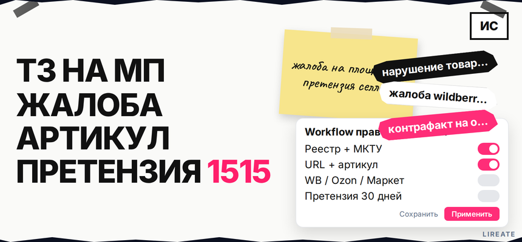

На Wildberries или Ozon появилась чужая карточка с вашим логотипом или сходным названием - и кажется, что площадка сама всё уберёт после одного письма. На деле без действующего свидетельства, скриншотов с URL и артикула жалобу часто отклоняют, а одна заявка в поддержку не заменяет претензию селлеру, если вы хотите компенсацию по закону. Ниже вы соберёте пакет доказательств, подадите жалобу на WB, Ozon или Яндекс Маркет и свяжете её с досудебной претензией без потери прав.

TL;DR / Быстрый инсайт: Нарушение товарного знака на маркетплейсе - когда чужой селлер ставит ваш зарегистрированный знак или сходное до смешения обозначение на карточке в однородном классе товаров (п. 6 ст. 1483 ГК РФ). Сначала проверьте свидетельство в Поисковой платформе Роспатента, зафиксируйте URL, дату, артикул и продавца, затем жалуйтесь в канал площадки и параллельно направьте претензию селлеру (30 дней на ответ между ИП и юрлицами - п. 5.1 ст. 1252). Компенсация с 04.01.2026 - от 10 000 до 10 000 000 ₽ за нарушение по выбору правообладателя (п. 4 ст. 1515), но суд определяет сумму; это не "штраф маркетплейса".
Гайд для правообладателя с действующим свидетельством на ТЗ: не жалоба покупателя в Роспотребнадзор. Знак в карточке на МП попадает под использование в сети (ст. 1484 ГК РФ). Нормы сверены на 01.11.2026; это не индивидуальная юридическая консультация.
Типичные сигналы: в названии или на фото стоит ваш зарегистрированный знак, повторяют фирменный шрифт или слоган, продают контрафакт - товар с незаконно размещённым ТЗ (п. 1 ст. 1515). Достаточно и сходства до смешения с вашим знаком для однородных товаров (п. 6 ст. 1483).
Делайте: выпишите все артикулы и ссылки, где видите спорное обозначение. Не делайте: путать копирование описания и фото (другой режим на площадке) с использованием чужого ТЗ без проверки свидетельства.
МКТУ - классификация товаров в свидетельстве: категория карточки должна быть однородной вашему перечню, иначе откажут. Сверьте знак в Поисковой платформе и открытых данных Роспатента.
Если своего ТЗ ещё нет, сначала регистрация в Роспатенте; кабинет бренда на площадке без свидетельства не даёт монополии на имя - см. как добавить бренд на Ozon и Wildberries (L03).
Делайте: сохранить PDF свидетельства и выписку из реестра с датой. Не делайте: подавать жалобу от имени "конкурента" без доверенности - WB отклоняет обращения без полномочий правообладателя (RWB Среда).
Минимальный чек-лист на каждый артикул:
Скрин без URL и даты слабее для суда; при риске снятия карточки - контрольная закупка (чек, фото упаковки) или нотариальный осмотр страницы (cyberrlaw.ru).
Делайте: вести таблицу артикул → продавец → дата фиксации. Не делайте: полагаться на один снимок экрана без контекста.
Каналы: портал appeal-copyright или раздел обращений правообладателей в WB Partners (Garant). К пакету приложите копию свидетельства, список артикулов или таблицу, скриншоты нарушения, доверенность представителя при подаче не от правообладателя (zhelezno.com).
У продавца, как правило, 10 рабочих дней на ответ; если ответ отклонён, юристы WB рассматривают обращение до 30 дней (RWB Среда). Блокировка не гарантирована в фиксированный срок - смотрите актуальную инструкцию площадки.
Делайте: дублировать номер обращения и переписку в архив. Не делайте: считать цифровой арбитраж заменой претензии с требованием денег по ст. 1515.
Два пути: кабинет правообладателя brand.ozon.ru после верификации свидетельства (Trusty) или обращение в поддержку: Товары и цены → Контроль качества → Нарушение правил площадки с SKU и ссылкой (onlinepatent.ru). Без действующего свидетельства и совпадения классов МКТУ с категорией товара Ozon может отказать в рассмотрении (marqatm.ru).
Делайте: указать каждый SKU отдельной строкой. Не делайте: ждать автоматической компенсации от Ozon вместо иска к нарушителю.
Для Яндекс Маркета правообладатель подаёт материалы через официальную форму с приложением документов на ТЗ. На других площадках ищите раздел для правообладателей или юридический e-mail в справке сайта.
| Площадка | Куда подать | Что приложить | Что дальше |
|---|---|---|---|
| Wildberries | Цифровой арбитраж | Свидетельство, артикулы, скрины, доверенность | Ответ продавца ~10 дн., review WB до ~30 дн. |
| Ozon | brand.ozon.ru или поддержка | ТЗ, SKU, скрины, класс МКТУ | Модерация по правилам Ozon, без фиксированной "гарантии" срока |
| Яндекс Маркет | Форма правообладателя | Скан свидетельства, ссылки на карточки | Ответ юрслужбы по регламенту площадки |
Делайте: хранить копию отправленного пакета для каждой площадки. Не делайте: подавать только в чат покупателя с продавцом - это не заменяет официальную жалобу.
Жалоба на площадке убирает карточку, но не заменяет досудебную претензию к продавцу, если цель - компенсация или убытки (selsup.ru). В претензии потребуйте прекратить использование знака на карточке, удалить обозначение с материалов (включая рекламный контент карточки - п. 3 ст. 1515) и при необходимости укажите способ расчёта компенсации по п. 4 ст. 1515 (диапазон 10 000 - 10 000 000 ₽ с 04.01.2026, не автоматическая максимальная сумма).
Перед иском о деньгах между ИП и юрлицами - претензия и 30 дней (п. 5.1 ст. 1252). Делайте: отправить заказным письмом или через ЭДО. Не делайте: пропускать досудебный этап при требовании компенсации.
Маршрут правообладателя:
Реестр ТЗ и МКТУ → скриншоты (URL + дата + артикул) → контрольная закупка при риске → жалоба на площадку → претензия селлеру (30 дней) → иск в арбитраж при отказе → мониторинг повторных карточек
Аргумент исчерпания права (ст. 1487) - на стороне ответчика; если жалобу подали на вас - см. L02. Не делайте: обещать "10 миллионов по умолчанию" - суд оценивает обстоятельства.
Если спорных карточек много или Ozon отклонил жалобу, имеет смысл подключить патентного поверенного до иска. На Лирейт можно заказать регистрацию и сопровождение товарного знака, если защита в реестре ещё не оформлена, и консультацию по претензии и доказательствам.
Материал проверен: эксперт Елена Ковалева (главный эксперт по SEO/GEO), редакция Лирейт.
Достоверность данных: нормы ГК РФ (ст. 1483, 1484, 1515, 1252), каналы WB/Ozon/Яндекс Маркет и практика доказывания сверены с официальными справками и источниками из research-notes на 01.11.2026. Показы Яндекс Вордстат в среде подготовки материала не запрашивались.
Да для полноценной жалобы правообладателя: приложите номер и скан свидетельства. Без ТЗ спор идёт по другим основаниям (например, недобросовестная конкуренция), но не по монополии на знак из реестра.
Для первичной жалобы на площадку иногда принимают, для суда - слабо. Снимайте экран с адресной строкой и датой; при риске удаления карточки усильте нотариальным осмотром или контрольной закупкой.
Если нужны только прекращение и карточка снята - часто достаточно переписки с площадкой. Если требуете компенсацию у ИП или юрлица в арбитраже - претензия и 30 дней, как правило, обязательны (п. 5.1 ст. 1252).
Правообладатель вправе выбрать: от 10 000 до 10 000 000 ₽ за каждое нарушение, двукратную стоимость контрафакта или двукратную стоимость права использования (п. 4 ст. 1515). Обоснуйте сумму фактами, суд может снизить или изменить размер.
Откройте L02: ответ в срок WB (~10 дней) и на претензию (~30 дней), лицензия или доказательства законного использования.